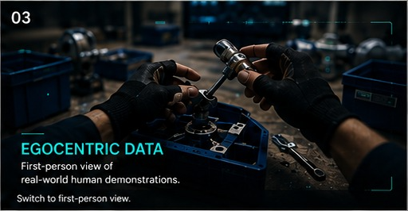

Built around the real world.
A practical pipeline for collecting human experiences and transforming them into useful data for robotics development.
01 / COLLECT
Capture real tasks, environments and human interactions using appropriate devices and protocols.
02 / PROCESS
Synchronize, organize and prepare the captured streams while preserving useful context.
03 / STRUCTURE
Turn raw observations into structured actions, events and task-level information.
04 / VALIDATE
Apply multi-level quality checks to improve accuracy, consistency and completeness.
05 / DELIVER
Package the resulting datasets in a format aligned to the customer's workflow.
Human demonstrations in real environments
Our focus is not synthetic activity. We capture real people performing real tasks, producing data that reflects the complexity of physical environments.
- First-person task demonstrations
- Industrial and everyday environments
- Human-object interactions
- Motion and contextual signals

Data that keeps the task visible.
From the operator's perspective to structured task steps, we aim to preserve the information robotics models need to understand how actions happen.